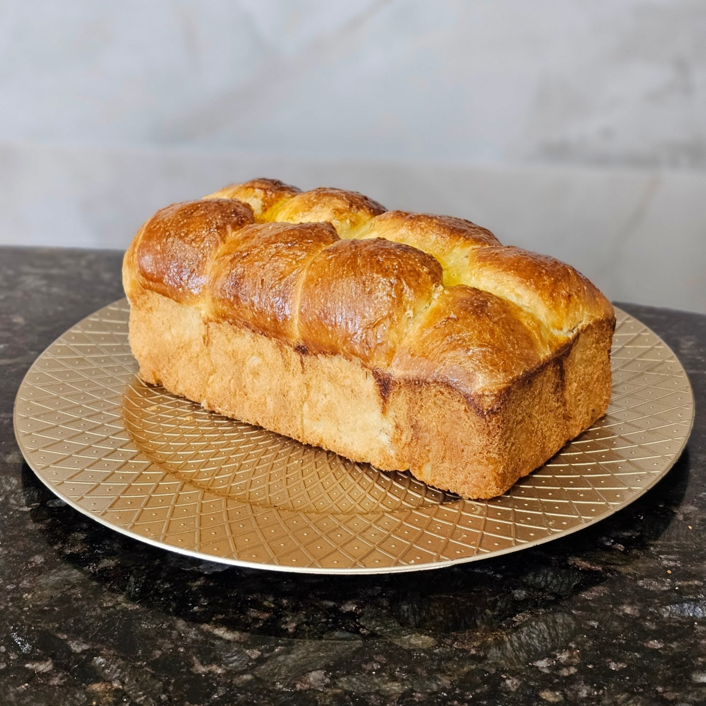
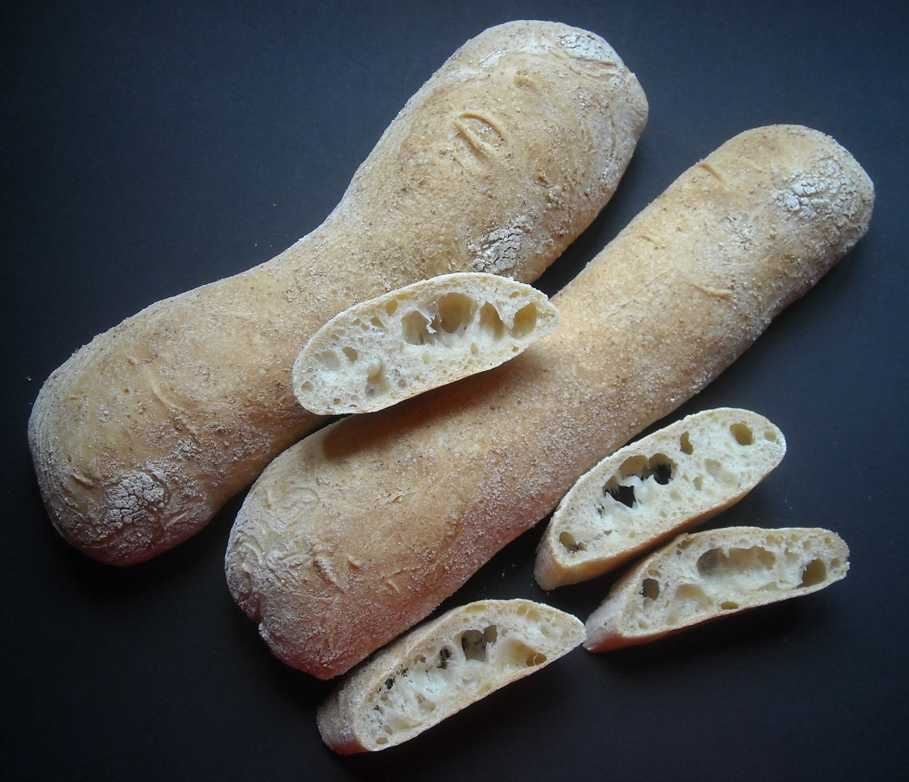
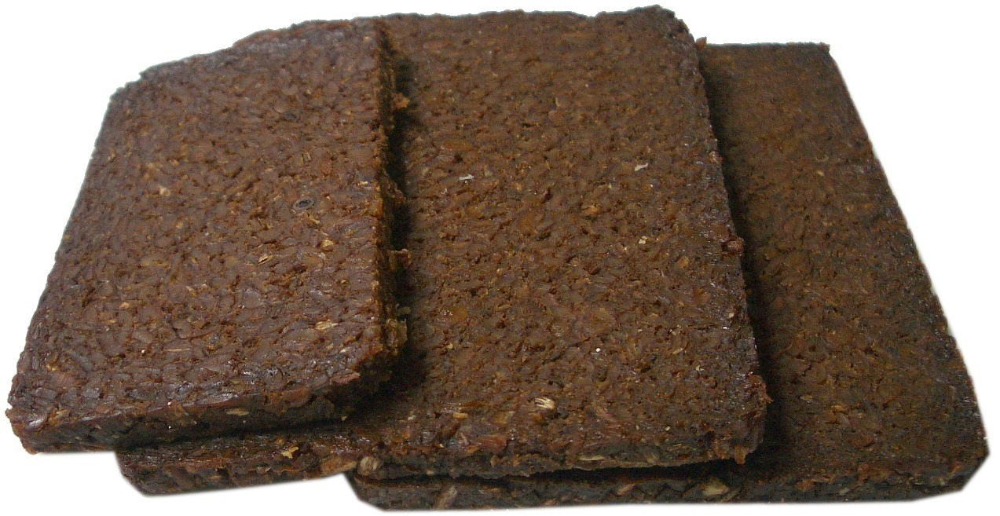

Brioche

Focaccia
Naan

Ciabatta

Pumpernickel
Brioche
Brioche is a type of French bread that is known for its rich and tender crumb. It is made with a high butter and egg content, which gives it a soft and slightly sweet flavor. Brioche is often enjoyed as a breakfast pastry or used in desserts, but it can also be used for savory dishes like sandwiches.
Focaccia
Focaccia is a type of Italian flatbread that is known for its crispy exterior and soft, airy interior. It is typically made with a high hydration dough and is often topped with herbs, olive oil, and sea salt.
Naan
Naan is a type of flatbread that is popular in South Asian cuisine. It is made with a yeasted dough and is traditionally cooked in a tandoor oven, though it can also be made on a stovetop.
Ciabatta
Ciabatta is an Italian bread that is characterized by its long, thin shape and distinctive open crumb structure. It is made with a high hydration dough and is often used for sandwiches.
Pumpernickel
Pumpernickel is a type of dense, dark rye bread that is known for its rich, slightly sweet flavor. It is made with coarsely ground rye flour and is often aged for several weeks to develop its characteristic taste. The word is a loanword from German.